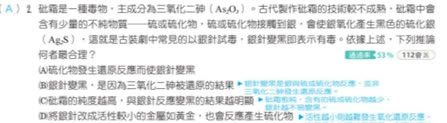
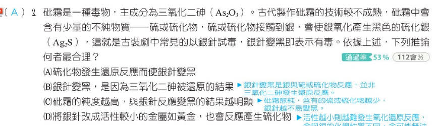

分享原卷｜第 2 題
完整原題
砒霜是一種毒物，主成分為三氧化二砷（As₂O₃）。古代製作砒霜的技術不成熟，砒霜中會含有少量的不純物質──硫或硫化物。硫或硫化物接觸到銀，會使銀氧化產生黑色的硫化銀（Ag₂S），這就是古裝劇中常見的以銀針試毒，銀針變黑即表示有毒。依據上述，下列推論何者最合理？
(A) 硫化物發生還原反應而使銀針變黑
(B) 銀針變黑，是因為三氧化二砷被還原的結果
(C) 砒霜的純度越高，與銀針反應變黑的結果越明顯
(D) 將銀針改成活性較小的金屬如黃金，也會反應產生硫化物
先想一想，再查看答案、解說與原圖
原卷作答：B
教材答案：A。A以「硫化物被還原」概括的用語有條件限制，本題依教材選A，相關條件限制見解說。
逐項解析
| 選項與原句 | 判讀 | 句意與判斷理由 |
|---|---|---|
| (A) 硫化物發生還原反應而使銀針變黑 | 應選 | 教材以銀被氧化、氧化還原相伴為意圖選A；但未指明含硫物種及其他參與物，不能一概斷言硫化物必被還原。 |
| (B) 銀針變黑，是因為三氧化二砷被還原的結果 | 不選 | 題幹將變黑原因指向硫或硫化物雜質，沒有說三氧化二砷本身與銀反應。 |
| (C) 砒霜的純度越高，與銀針反應變黑的結果越明顯 | 不選 | 純度越高代表硫或硫化物雜質越少，不支持變黑越明顯。 |
| (D) 將銀針改成活性較小的金屬如黃金，也會反應產生硫化物 | 不選 | 改成更不活潑的金屬，不能保證仍發生同樣的氧化反應。 |
詳細說明與解題步驟
題幹指出黑色物質是硫化銀，來源是硫或硫化物雜質，而不是三氧化二砷本身，所以B不合題意。砒霜越純，雜質通常越少，不支持C；金屬活性不同，也不能保證黃金會同樣反應，D不合理。
教材列A，但「銀被氧化」只能確定反應中必有還原過程，不能直接推出所有情況都是硫化物被還原。若銀與硫單質直接生成硫化銀，可說硫被還原；但硫化氫在有氧條件下使銀變黑時，可用4Ag＋2H₂S＋O₂→2Ag₂S＋2H₂O表示，這個例子被還原的是氧，硫仍維持原來的氧化態。
因此保留原題及教材A，說明這是原選項的概括限制；不再用「反應物整體」迴避具體物種，也不把銀針當成能驗出所有毒物的工具。
下方漫畫僅幫助區分硫類雜質與砒霜主要成分，不能拿來證明A在所有條件下都成立。
核對註記：題幹、A～D及印刷答案A均已由教用PDF確認；銀被氧化不能單獨證明所有硫化物必被還原，解說保留此限制。 冊次／章節依原對話教用PDF第四冊單元9核對。 使用者已確認教材答案A與目前解說OK，核對已結案。
原圖（僅本題）

